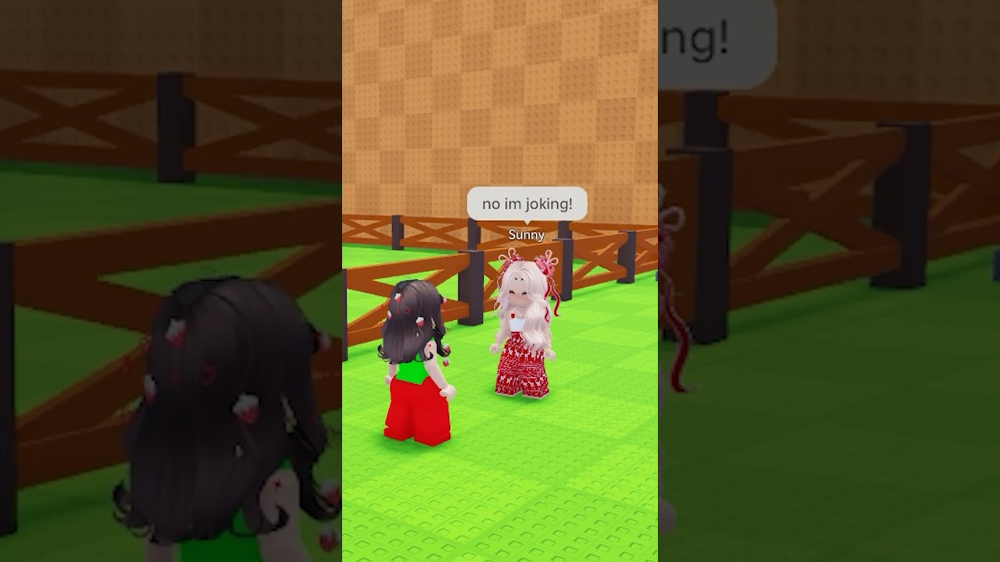

🎂 „Câți ani ai? Atâtea ouă îți dau”: giveaway-ul de la EveBlox, varianta VEXU

EveBlox are un short în care dă ouă altor jucători în Steal An Egg. Formula „câți ani ai? atâtea îți dau” e ideea pe care o adaptăm. Copiem formula, nu filmarea. ⚠️ Hook-urile sunt deduse din titlu, cover și cadre, nu spuse de creator.
📌 Clipul original
- 🎥 EveBlox, „Gave eggs away in Steal and Egg!”
- 📊 ~24K vizualizări și ~12,7K pe oră, citite de Spionul pe ~19 oct. Azi, 26 oct, YouTube arată ~1,62M vizualizări.
- ⏱️ Durează 23 de secunde
- ▶️ https://www.youtube.com/shorts/2Q8f6z7o_rI
- 🔎 TikTok, de căutat în aplicație: „steal an egg giveaway”
🎬 Formula
- O întrebare simplă (vârsta) decide câte ouă primește jucătorul
- Reacția celui care primește e momentul pentru care rămâi
- Mai mulți jucători la rând, ca să vrei să vezi următorul
💡 Ideea VEXU
- 🪝 Hook: „Câți ani ai? Atâtea ouă îți dau.”
- 🎁 Dăm ouăle fără nicio condiție: nu cerem like, follow sau abonare ca să primești.
- ⚠️ De verificat în joc înainte de filmare: dacă și cum poți da ouă altui jucător.
Vezi și (tot din familia „cadouri”): un noob primește skin-ul visat, varianta VEXU cu oul visat: https://pyromanc3r777.github.io/vexu-hq/posts/noob-primeste-skin-ul-visat-varianta-vexu-oul-visat.html
Follow pe TikTok @vexu_online și abonare pe YouTube la VEXU Online. Follow = Au ce bile! 💥